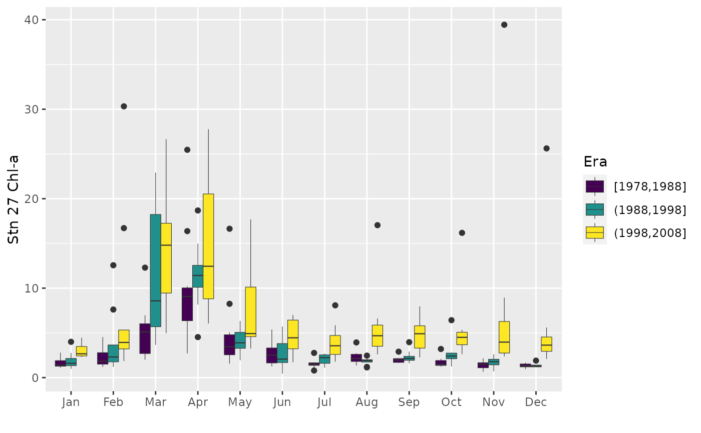
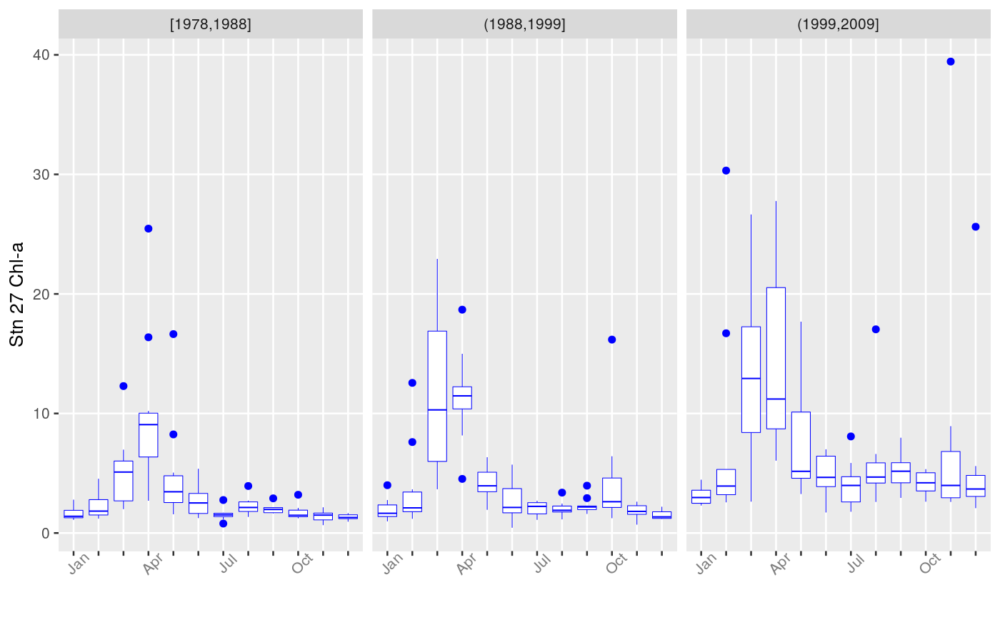
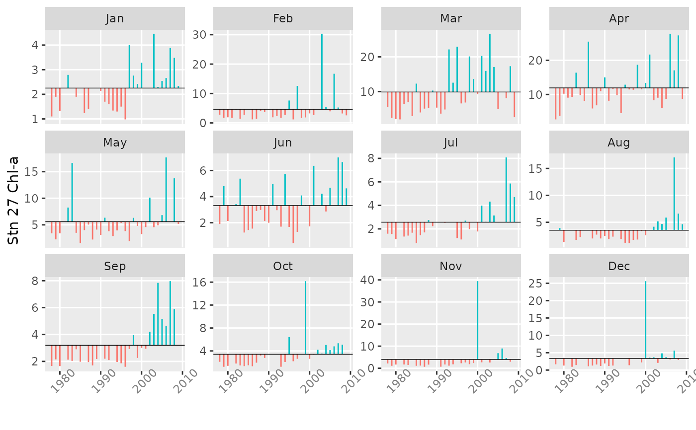

Divides the time range for a monthly time series into different eras and plots composites of seasonal pattern. Can also plot each month separately for the entire record.
plotSeason(x, type = c("by.era", "by.month"), num.era = 4, same.plot = TRUE, ylab = NULL, num.col = 3)
| x | Monthly time series |
|---|---|
| type | Plot seasonal pattern by era, or each month for the entire record |
| num.era | Integer number of eras, or vector of era year breaks |
| same.plot | Should eras be plotted by month? |
| ylab | Optional character string label for y-axis |
| num.col | Number of columns when plotted |
A plot (and the corresponding object of class "ggplot").
If num.era is an integer, the time range is divided into that many
equal eras; otherwise, the time range is divided into eras determined by the
num.era vector of years. When plotted "by.era" and
same.plot = FALSE, the composite patterns are plotted in a horizontal
row for easier comparison, which limits the number of periods that can be
examined. Boxes based on fewer than half of the maximum possible years
available are outlined in red. If same.plot = TRUE, a single plot is
produced with era boxplots arranged by month. When plotted
"by.month", values for each month are first converted to standardized
anomalies, i.e., by subtraction of long-term mean and division by standard
deviation. As always, and especially with these plots, experiment with the
device aspect ratio and size to get the clearest information.
chl27 <- sfbayChla[, 's27'] plotSeason(chl27, num.era = c(1978, 1988, 1998, 2008), ylab = 'Stn 27 Chl-a')plotSeason(chl27, num.era = 3, same.plot = FALSE, ylab = 'Stn 27 Chl-a')plotSeason(chl27, "by.month", ylab = 'Stn 27 Chl-a')